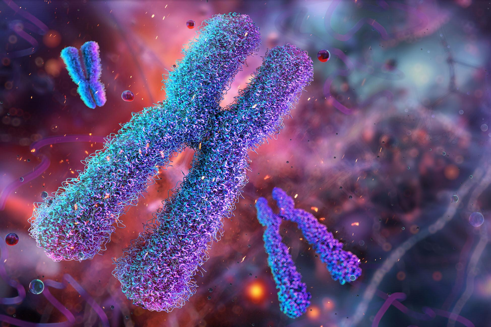

โครโมโซม DNA และยีน
โครโมโซม (Chromosome) คือ โครงสร้างที่อยู่ภายในนิวเคลียสของเซลล์ ประกอบด้วย DNA และโปรตีนฮิสโตน ทำหน้าที่เก็บรักษาและถ่ายทอดข้อมูลทางพันธุกรรมของสิ่งมีชีวิต มนุษย์มีโครโมโซมในเซลล์ร่างกายทั่วไปจำนวน 46 แท่ง หรือ 23 คู่ แบ่งเป็นโครโมโซมร่างกาย 22 คู่ และโครโมโซมเพศ 1 คู่ โครโมโซมเปรียบเสมือน “ชั้นวางหนังสือ” ที่ใช้จัดเก็บข้อมูลทางพันธุกรรมอย่างเป็นระเบียบ
DNA หรือกรดดีออกซีไรโบนิวคลีอิก (Deoxyribonucleic Acid) เป็นสารพันธุกรรมที่ทำหน้าที่เก็บข้อมูลสำหรับการสร้างและควบคุมการทำงานของสิ่งมีชีวิต DNA มีโครงสร้างเป็นสายคู่บิดเป็นเกลียว เรียกว่า เกลียวคู่ (Double Helix) ประกอบด้วยหน่วยย่อยที่เรียกว่านิวคลีโอไทด์ ซึ่งมีเบสไนโตรเจน 4 ชนิด ได้แก่ อะดีนีน (A) ไทมีน (T) ไซโทซีน (C) และกวานีน (G) โดย A จับคู่กับ T และ C จับคู่กับ G การเรียงลำดับของเบสเหล่านี้เป็นตัวกำหนดข้อมูลทางพันธุกรรม เปรียบเสมือน “ตัวหนังสือ” ที่บันทึกรหัสลับของสิ่งมีชีวิต
ยีน (Gene) คือ ส่วนหนึ่งของ DNA ที่มีข้อมูลทางพันธุกรรมสำหรับสร้างโปรตีนหรือ RNA ที่ทำหน้าที่ต่าง ๆ ในเซลล์ ยีนมีบทบาทในการควบคุมลักษณะของสิ่งมีชีวิต เช่น สีผิว สีตา ลักษณะเส้นผม กรุ๊ปเลือด และลักษณะทางพันธุกรรมอื่น ๆ สามารถเปรียบเทียบยีนได้กับ “คู่มือ” ที่สั่งให้ร่างกายสร้างหรือควบคุมลักษณะต่าง ๆ
โครโมโซม DNA และยีนมีความสัมพันธ์กัน โดยโครโมโซมประกอบด้วย DNA และยีนเป็นส่วนหนึ่งของ DNA ทั้งสามสิ่งมีความสำคัญต่อการเจริญเติบโต การทำงานของเซลล์ และการถ่ายทอดลักษณะทางพันธุกรรมจากพ่อแม่ไปสู่ลูก